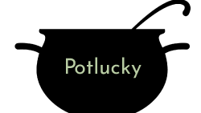
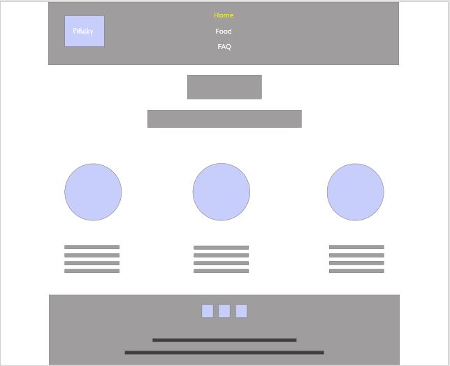
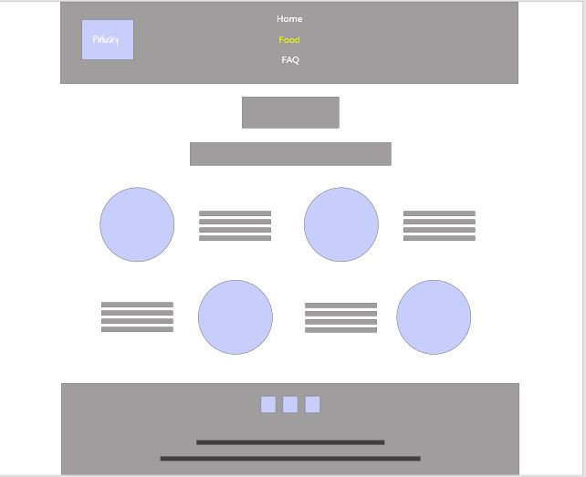
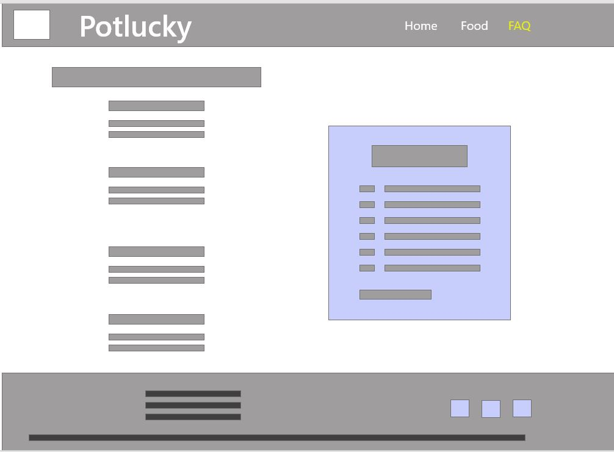

Overview
Purpose
The purpose of Potlucky is to provide a service of procuring and preparing potluck food for busy people
Audience
Working men and women 30-50
$75,000 +
Live locally to me (Cache Valley, Utah)
Don’t like to cook and/or don’t have time
Social – wants to go to potlucks
Branding
Website Logo
Style Guide
Color Palette
Palette URL: https://coolors.co/719150-291600-ffffff
| Primary | Secondary | Accent 1 | Accent 2 |
|---|---|---|---|
| #291600 | #719150 | #ffffff | #000000 |
Typography
Heading Font: Shadows Into Light
I wanted to use a cursive font because it feels homemade and inviting. This particular font was a bit distinctive.
Paragraph Font: Raleway
This sans-serif font is easy to read on the web and plays well with Shadows Into Light. Even though they are the same style, they differ enough.
Normal paragraph example
No time to run to the store or to whip something up for a potluck? It's your lucky day!
Colored paragraph example
No time to run to the store or to whip something up for a potluck? It's your lucky day!
Navigation
Wireframes

